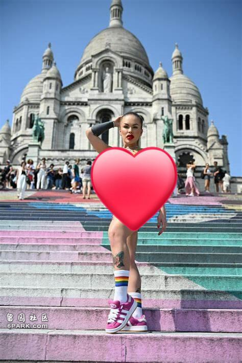

巴黎奥运会自从举办以来就风波不断，除了开幕式饱受诟病之外，此前阿尔及利亚拳手伊曼·凯利夫(Imane Khelif)与意大利对手安吉拉·卡里尼(Angela Carini)的一场比赛也引起了巨大争议。但最不可思议的是，应该没有人会想到奥运会还能和知名杂志《花花公子》扯上关系。

该杂志由已故媒体大亨休·海夫纳于1953年12月创办，之后享誉全球。而近日，据《每日星报》报道，曾在今年6月登上丹麦版《花花公子》封面的模特拉维娜·汉尼利(Ravena hannely)却因其特别的“庆祝奥运”方式而引起了巨大的轰动。
从社交媒体上疯传的照片可以看到，拉维娜赤着身子站在巴黎圣心大教堂的台阶上拍照，她身上画满了各种各样的彩绘，包括鲜花、奥运五环和“LOVE”“巴黎2024”等图案。
据报道，这些彩绘出自艺术家摩根·德庞德(Morgane Depond)之手，而如拉维娜所言，她是想创造一些象征奥运会“团结与和平”的东西，毕竟“艺术需要激励、质疑和启发。”
也因此，尽管圣心大教堂外游客络绎不绝，但“肩负使命”的拉维娜依然十分淡定，她变换各种角度拍摄，看上去非常轻松自在。
直到法国警方闻风而至。据NeedToKnow报道，当地警方发现拉维娜的不当行为后就立即拦住了她，并敦促她离开，但拉维娜却与他们争执起来。
这位来自巴西的模特辩护称，她来到圣心大教堂拍摄是为了庆祝奥运会，并与奥运会开幕式相提并论。拉维娜反问警方，“为什么赤着半身的人可以在奥运开幕式上一起吃‘最后的晚餐’，而我就不能在户外画画呢?”
与此同时，这位金发女郎还指责法国警方“虚伪”，而让警察们非常无奈。当然，不可否认的是，拉维娜的确非常聪明，她深谙成名之道。
在这次事件之后，拉维娜很快就在社交媒体上走红，甚至还有人称赞她是奥运会的“缪斯女神”。而此前，当她在社交媒体上发起一项素食挑战时，也吸引了很多粉丝的关注和支持。
23岁的拉维娜告诉粉丝，“我决定坚持30天，这不仅是个人的尝试，也是对健身行业标准的挑战。”这位网红表示，她想以此证明，“在不依赖动物衍生产品的情况下，也有可能取得出色的身体效果，同时也尊重环境和动物。”
与此同时，拉维娜还计划记录下自己的挑战过程，并与粉丝们分享。而谈及为何接受这次挑战，她解释说，“这是见证我成长的一次机会，也是对一个更善良、更健康的世界做出贡献的机会”，“我希望以此来激励人们在自己的生活中应该更多考虑有关道德和可持续的选择，”“这不仅仅是关于美或者美学，而且是关于更有意义的东西。”